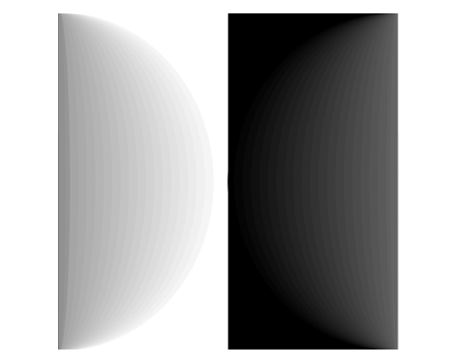
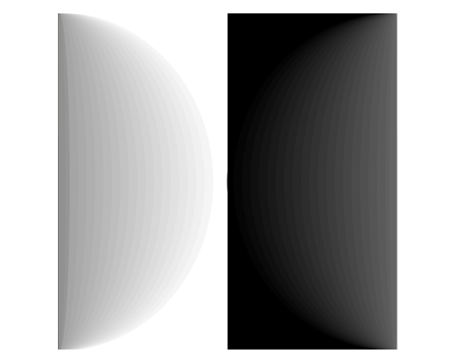

#3 ICM is coming
There is many ways ICM can be applied to my background, it is graphic design so the relation with some of the stuff we are working on right now links directly to what I know regarding graphic design.
But the best way to relate my experience as a graphic designer and what ICM has to offer is the ability to extend graphic design and improve it as a medium, the relation this two have is symbiotic, the help each other producing better stuff, an example would be web design.
You can create a great experience on your website, the usability of it can be satisfactory, but if you don't have a good Interface it will feel incomplete or even worsen the experience that you worked so hard on.
Graphic design is my background and is what I studied for but the thing that brought me to Itp is interaction design, and I'm passionate UI/UX so ICM can help me find that point between these two and improve how I work with them.

For this composition I thought of My way of thinking sometimes and at the same time a reflection of how society is. My friends and family sometimes tell me that I talk like I think that the world is black and white, but even though I sound harsh or I transmit that kind of feeling I know that even though things look that way I that I talk like it is so, I know that the world is really different and that black and white are just two of the many color of the spectrum of life. And those two extremes sometimes end up being the same.
gP
But the best way to relate my experience as a graphic designer and what ICM has to offer is the ability to extend graphic design and improve it as a medium, the relation this two have is symbiotic, the help each other producing better stuff, an example would be web design.
You can create a great experience on your website, the usability of it can be satisfactory, but if you don't have a good Interface it will feel incomplete or even worsen the experience that you worked so hard on.
Graphic design is my background and is what I studied for but the thing that brought me to Itp is interaction design, and I'm passionate UI/UX so ICM can help me find that point between these two and improve how I work with them.

Not So Differernt - p5.js
For this composition I thought of My way of thinking sometimes and at the same time a reflection of how society is. My friends and family sometimes tell me that I talk like I think that the world is black and white, but even though I sound harsh or I transmit that kind of feeling I know that even though things look that way I that I talk like it is so, I know that the world is really different and that black and white are just two of the many color of the spectrum of life. And those two extremes sometimes end up being the same.
gP